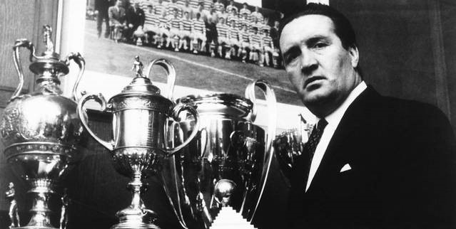

Chương 16

è năm 1984, Alex Ferguson nhận lời làm trợ lý HLV cho đội tuyển Scotland.Ở ĐTQG, Alex là một “Archie Knox”, lãnh trách nhiệm tập cho cầu thủ. Công tác “đối ngoại” như họp báo, trả lời phỏng vấn,…đều do HLV trưởng Jock Stein lo. Alex cũng được phân công theo dõi phong độ của các tuyển thủ QG đang thi đấu tại Scotland, trong khi bản thân Stein theo dõi những tuyển thủ chơi tại Anh.
Thật ra, Alex vốn không thích phụ trách ĐTQG, huống hồ việc lên tuyển còn khiến ông phải xao lãng nhiệm vụ tại Aberdeen. Lý do duy nhất khiến ông chấp nhận lời mời là "sư phụ" Jock Stein. Lúc bấy giờ, tuy đã vang danh trên trường quốc tế, Alex vẫn luôn khát khao học hỏi, trau dồi trêm kiến thức, và để học hỏi, thì không gì bằng làm việc dưới quyền một bậc thầy như Stein. “Một mình Stein bằng cả một trường đại học”, Alex viết trong hồi ký.
Sau tai nạn giao thông năm 1975, Stein đã yếu đi rất nhiều: Thể lực sút giảm, giọng nói không còn sang sảng, đầy quyền uy như trước, song trí tuệ thì vẫn sắc sảo như ngày nào. Những khi ở bên cạnh Stein, Alex không bỏ qua một cơ hội nào để học. Ông hỏi hết câu này đến câu khác, hết vấn đề kia đến vấn đề nọ; Dù là chuyện gì, Stein cũng vui vẻ chia sẻ, truyền đạt kinh nghiệm. Có khi hai người vừa uống trà vừa bàn chuyện chuyên môn đến cả buổi mà không chán.
Dưới quyền Stein và Ferguson, Scotland sở hữu một đội hình khá mạnh. Sáng giá nhất trong đội dĩ nhiên là bộ ba Liverpool: Kenny Dalglish, Graeme Souness, và Alan Hansen, ngoài ra còn có Gordon Strachan và Arthur Albiston của Manchester United, Steve Archibald của Barcelona, Paul McStay của Celtic, cùng bộ ba Aberdeen: Jim Leighton, Willer Miller, Alex McLeish. Với những tên tuổi kể trên, họ hoàn toàn đủ khả năng giành vé dự World Cup 1986 ở Mexico.
Tại vòng loại World Cup, Scotland nằm ở bảng bảy, chung với Tây Ban Nha, Wales, và Iceland. Họ khởi đầu suôn sẻ: Thắng Iceland 3-0, TBN 3-1, nhưng sau đó thua Wales ngay trên sân nhà, rồi thua tiếp TBN trong trận lượt về, thậm chí suýt bị đội chót bảng Iceland chia điểm, nếu Jim Bett không kịp ghi bàn thắng muộn màng vào phút 86, và nếu trước đó, Jim Leighton không xuất sắc cản phá được một trái phạt đền. Trong lượt đấu cuối cùng, để duy trì hy vọng đến Mexico, Scotland buộc phải kiếm được ít nhất một điểm tại Cardiff, thủ phủ xứ Wales. Đây là việc chẳng dễ dàng gì, vì Wales tuy bị đánh giá thấp hơn Scotland, nhưng cũng không thiếu nhân tài. Cặp đôi Ian Rush – Mark Hughes của Wales đủ sức xuyên thủng bất cứ hàng phòng ngự nào ở châu Âu.
Trước áp lực kinh hồn, các cầu thủ Scotland bắt đầu trận đấu như… gà mắc tóc, còn thủ thành Leighton thì lóng nga lóng ngóng, ra vào như một kẻ quáng gà. Chỉ sau 13 phút, Mark Hughes đưa Wales vượt lên dẫn trước. Tỷ số 1-0 được giữ nguyên cho đến hết hiệp một. Trong giờ nghỉ, bị Jock Stein truy hỏi về phong độ tệ hại, Jim Leighton thú nhận: Một tròng contact lens của anh bị rơi ngay đầu trận, không biết mất đi đằng nào.
Jim Leighton là thế, luôn bị những tai nạn linh tinh. Trước trận chung kết Cúp QG gặp Celtic năm 1984, anh cắt cỏ trong vườn, suýt bị máy cắt cỏ cắt mất…ngón tay. Bây giờ thì xảy ra chuyện đánh mất tròng kính. Stein quay sang Alex với ánh nhìn giận dữ, như muốn hỏi: Chuyện này là thế nào? Cậu là thầy của Leighton ở Aberdeen, tại sao không nói gì với tôi về chuyện Leighton bị cận? Lẽ ra phải chuẩn bị trước mấy cặp kính dự phòng chứ?
Alex ngớ người. Ông cũng chỉ vừa mới biết Leighton đeo kính sát tròng. Suốt bảy năm trời, không một ai ở Pittodrie hay Leighton bị cận thị, bởi anh luôn giữ kín điều đó như một bí mật. Dĩ nhiên, từ sau vụ này, Alex sẽ bắt Leighton sắm thêm một cặp kính “sơ cua”, nhưng trong thời điểm nước sôi lửa bỏng hiện tại, chỉ có một biện pháo duy nhất: Thay thủ môn. Alan Rough được tung ra trấn giữ khung thành trong hiệp hai.
Từng phút, rồi từng phút trôi qua! Thời gian càng lúc càng cạn dần. Jock Stein ngồi bất động, mồ hôi lấm tấm, mặt tái hẳn đi. Alex lo lắng, ra dấu cho bác sỹ Stuart Hillis để ý theo dõi tình trạng sức khỏe của HLV trưởng. Bỗng dưng, Stein cất tiếng:
-Alex, hôm nay ta có thua ở đây, cũng không được phép đánh mất thể diện quốc gia. Sau khi trận đấu kết thúc, dù kết quả thế nào, cậu cũng phải dẫn cầu thủ ra vòng tròn giữa sân, cúi chào cảm ơn khán giả, nghe không?
Tại sao không phải bản thân Stein dẫn cầu thủ, mà lại là Alex? Lời nói dường như đã chứa sẵn điềm gở!
Scotland không thua. Phút 80: Hậu vệ David Phillips của Wales để bóng chạm tay trong vòng cấm. Davie Cooper thực hiện thành công quả penalty. Toàn đội Scotland sướng đến phát cuồng, chỉ riêng Stein không nói một lời. Đến phút 90, khi trọng tài thổi phạt, Stein ngỡ đó là tiếng còi dứt trận, bèn đứng lên, toan đến bắt tay HLV đối phương. Nhưng rồi ông quỵ xuống, và không bao giờ tỉnh lại nữa.
Theo đúng lời dặn của thầy, Alex dẫn cầu thủ ra sân, cúi chào cảm ơn khán giả. Vào đến phòng thay đồ, ông thông báo với mọi người: HLV trưởng lên cơn nhồi máu cơ tim, chắc không quá nghiêm trọng. Vừa nói xong, bước ra ngoài, ông chợt thấy Graeme Souness đang đứng khóc trước cửa phòng y tế.
“Thầy đã đi rồi!” Souness nghẹn ngào.
Alex gần như suy sụp. Trước mặt cầu thủ, người hâm mộ và báo giới, ông cố tỏ ra bình tĩnh. Song khi về đến Scotland, một mình lái xe từ Glasgow về Aberdeen, tất cả những cảm xúc bị kìm nén trong ông bùng phát. Alex tấp xe vào lề đường, khóc như chưa từng được khóc bao giờ!
Áp lực bóng đá khủng khiếp như vậy đó, đôi khi nó giết chết cả con người. Chứng kiến cái chết của người thầy thân kính, người ông luôn nể phục và coi như cha, Alex tự nhủ với lòng mình: Sẽ không làm HLV đến quá tuổi 60.Tuy nhiên, ngay trong lúc này, điều đầu tiên cần làm là giữ vững ngọn cờ, tiếp tục công việc còn đang dang dở. Sau trận hòa tại Cardiff, Scotland được bảy điểm, ngang với Wales, nhưng hơn về hiệu số thắng bại. Họ giữ vững vị trí nhì bảng, giành quyền tranh vé vớt với Australia. Được đôn lên chức vụ HLV trưởng, trách nhiệm của Alex là đưa bằng được đội tuyển đến Mexico.
Trong thời gian dẫn dắt Scotland, Alex tỏ ra dễ dãi, không bắt buộc cầu thủ phải theo “kỷ luật nhà binh” như tại Pittodrie. Khi đã đến đóng quân ở Mexico, ông thậm chí cho phép cầu thủ ra ngoài “doanh trại” ăn uống, xem đua ngựa, và cũng không cấm họ uống bia. Thầy trò đối xử với nhau rất thoải mái, đôi khi đùa giỡn như bè bạn. Theo sách tiểu sử Ferguson của Barclay (2011), có phen mấy anh chàng học trò tinh nghịch còn mò vào nhà vệ sinh phòng thầy, tháo lỏng hết bóng đèn, rồi dùng nylon bịt bồn cầu lại. Đến lúc Alex vào toilet, tối quá chẳng thấy gì, nên cứ theo thói quen “hành sự”, bị nước tiểu bắn lên ướt hết cả người!
Các tuyển thủ đến từ Aberdeen hết sức ngạc nhiên: Không hiểu sao thầy ở CLB thì khó và dữ, đến khi lên tuyển lại trở nên dễ và hiền? Câu trả lời thật ra rất đơn giản: Alex không phải loại người lệ thuộc vào cá tính, bị cá tính lôi đi. Trái lại, ông hoàn toàn làm chủ cá tính bản thân. Khi cần dữ, ông rất dữ, nhưng khi cần hiền, cũng rất hiền. Bắt người khác theo khuôn phép, nhất nhất nghe theo lời mình không phải dễ dàng gì. Ngay tại Pittodrie, Alex cũng phải mất cả năm mới thành công. ĐTQG hiển nhiên không phải Aberdeen. Đội tuyển là tập hợp cầu thủ đến từ nhiều CLB khác nhau, rất khó bắt buộc và nhốt họ vào cùng một cái khuôn. Giá thử làm được thì cũng phải mất nhiều thời gian, mà ĐTQG chỉ thỉnh thoảng mới tập trung, mỗi lần tập trung chỉ ngắn hạn, lấy đâu ra thời gian. Huống hồ chi Alex là HLV tạm quyền[1], chỉ dẫn dắt đội đến hết World Cup. Muốn trong vài tháng biến ĐTQG thành Aberdeen thì chỉ phản tác dụng, Alex hiểu rõ điều ấy.
Cũng cần nói thêm: Đã là tuyển thủ QG thì ai nấy cũng đều có tiếng tăm, không dễ gì bị HLV lấn lướt. Những tuyển thủ kỳ cựu như Kenny Dalglish có thể coi là đồng nghiệp, chứ không phải học trò của Alex Ferguson. Dalglish cùng lớn lên tại Govan như Alex, cả hai từng có dịp đối đầu trên sân cỏ. Về nghiệp cầu thủ, “Vua Kenny” là cầu thủ xuất sắc nhất Scotland kể từ thời Denis Law[2], trong khi Alex chưa từng được khoác áo đội tuyển. Về nghiệp huấn luyện, tuy Alex thành công rực rỡ với Aberdeen, Dalglish đang là cầu thủ kiêm HLV của Liverpool, CLB số một châu Âu. Xét trên hai phương diện, phương diện nào Dalglish cũng vượt trội. Với một con người như thế, không thể nào dùng “máy sấy” mà “sấy”. Bên cạnh Dalglish, Graeme Souness cũng cần được nể trọng. Trước World Cup ở Mexico, Souness đã trở thành cầu thủ kiêm HLV của Glasgow Rangers[3]. Dưới quyền có đến hai…HLV trưởng, nên mỗi khi họp đội bàn chiến thuật, Alex Ferguson không thao thao bất tuyệt như ở Pittodrie. Mỗi lần nói xong một điểm, ông đều dừnglại, chờ nghe ý kiến cầu thủ.

Huyền thoại Jock Stein (ảnh: Mirrorfootball.co.uk)
[1]Alex Ferguson đưa ra yêu sách với LĐBĐ Scotland "Nếu muốn tôi làm HLV về lâu về dài thì phải trao cho tôi trọn quyền. Ngoài việc dẫn dắt ĐTQG, tôi cần được có tiếng nói quyết định ở các đội trẻ như U-21, U-18,...". Nói cách khác, ông muốn được giữ vai trò HLV kiêm giám đốc kỹ thuật. Do LĐ từ chối yêu sách trên, Alex chỉ chấp nhận cầm quân đến hết World Cup.
[2] Kenny Dalglish, biệt danh “Vua Kenny”, giữ kỷ lục về số lần khoác áo (102 lần), cũng như số bàn thắng (30 bàn, ngang với Denis Law) ghi cho ĐTQG Scotland.
[3] Giữa Souness và trợ lý HLV Scotland Walter Smith có mối quan hệ khá éo le. Smith vừa là trợ lý tại Rangers, vừa là trợ lý cho ĐTQG. Như vậy, ở ĐTQG, Smith là sếp của Souness, nhưng ở Rangers lại là cấp dưới.